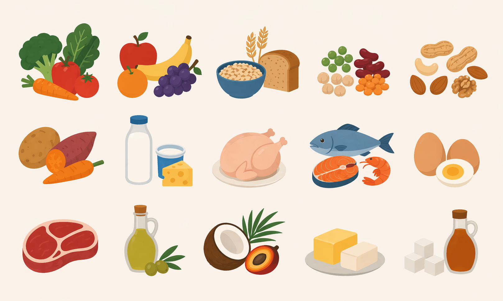

Hover over each food group to see the recommended daily intake and its role in metabolic health.

Hover over any food group to see its recommended daily intake and metabolic health benefits.
Based on EAT-Lancet 2025, Table 1
Rockström J et al. The Lancet. 2025;406(10512):1625–1700.
Rockström J et al. The Lancet. 2025;406(10512):1625–1700. Table 1.